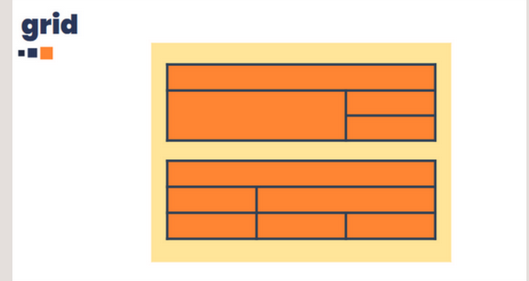
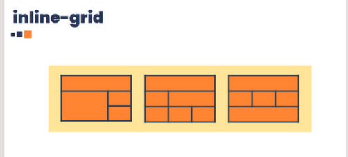

Assim como o flexbox, o grid é um módulo e não uma única propriedade. Ele envolve muitas coisas, incluindo todo o seu conjunto de propriedades. Algumas dessas propriedades devem ser definidas/aplicadas no contêiner (elemento pai, conhecido como grid container), enquanto as demais devem ser definidas nos elementos filhos (chamados de grid itens) que são os itens da grade.
partes do do grid layout
- container:
- O elemento que será a grade
- linhas:
- São localizadas na horizontal da grade
- Colunas:
- São localizadas na vertical da grade
Estrutura básica
existem dois tipos de propriedades para definirmos no nosso container:
- display-grid
- Os grids são dispostos um abaixo do outro. Mescla o comportamento block com o grid 
- Display: inline-grid
- Os grids são dispostos um do lado do outro, mesclando comportamento inline com o grid. 
Meu primiero grid
Conceitos
- grid-gap
-
Define o espaço entre as colunas e linhas do código.
grid-gap: 10px 15px; /* Grid-row-gap: 10px, gridcolumn-gap:15px*/
- grid-area
- Não é necessário usar o grid row e column. Adiciona espécies de apelidos para a sessão. Primiro se adiciona os "grid-area: nome" e depois, no container, o "grid-template-areas: 'nome nome'"
- Ou seja: header na primira linha, colunas 1 e 2.menu na segunda linha, coluna 1. content na segunda linha, coluna. footer na linha 3, coluna 1 e 2.
grid-template-areas: "header header"
"menu content"
"footer footer";